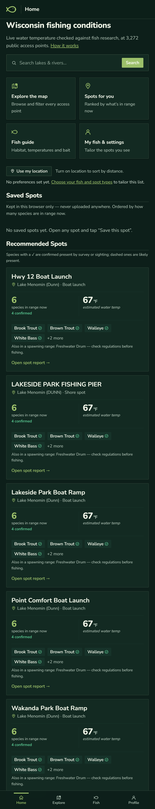
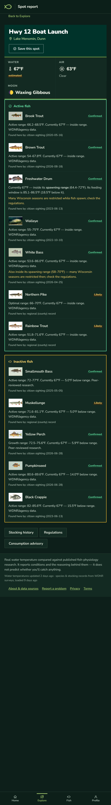
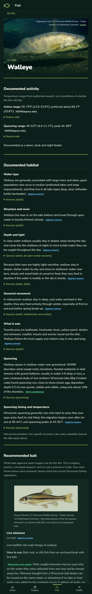
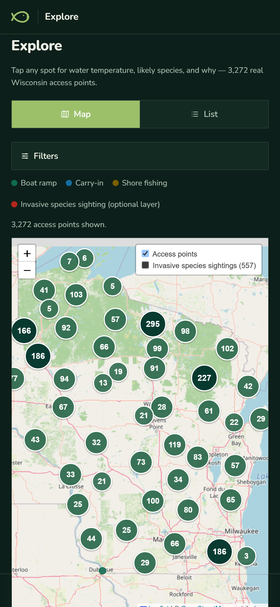
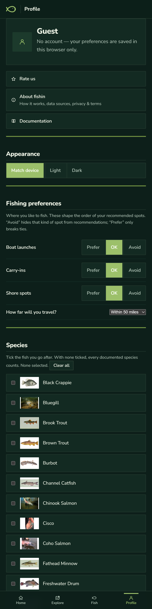

Species in range now
your targets, if you set anyEvidence strength
confirmed before likelySpot type you prefer
from your ProfileReading quality
real, estimated, proxyDistance
only if you allow location


